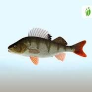
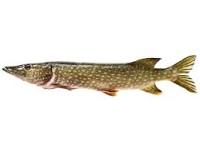
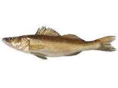

- Osallistuminen vaatii järjestäjän kutsun.
- Kilpailussa ei osanottomaksua.
- Saaliiksi saatu kala tulee säilyttää puhtaassa kuivassa astiassa tai pussissa, eikä mukaan saa lisätä hiekkaa, vettä tai muuta ainetta kilpailusta poissulkemisen uhalla.
- Kisoissa käytössä vapaat paikat.
- Kilpailuissa 30 minuutin paluusiirtymä.
- Kahlatessa maksimisyvyys polveen saakka.
- Etäisyys kanssakilpailijaan vähintään 2-metriä.
- Onginta lopetettava välittömästi kilpailu-ajan päättyessä, kuitenkin jos ajan päättyessä on kala kiinni sen saa vielä nostaa ylös.
| Kuva | Laji | Lisätietoa |
|---|---|---|
|  | Ahven | Ahven Wiki |
|  | Hauki | Hauki Wiki |
|  | Kuha | Kuha Wiki |
Kilpailija ei saa käyttää muuta pyyntivälinettä kuin yhdellä (1) yksihaaraisella koukulla, painolla ja koholla varustettua enintään 10 metrin pituista vapaonkea. Pilkin käyttö painona ja sivutapsin käyttö on kielletty. Siiman tulee olla kiinnitettynä vavan kärkiosaan. Siimassa olevien painojen määrä ei saa ylittää kohon kantavuutta. Ongittaessa on kohon oltava vedessä. Varavälineitä saa olla mukana. Haavin käyttö ongessa kiinni olevan kalan ylösotossa on sallittu.
Syötteinä voi käyttää toukkia, matoja, hyönteisiä ja muita eläinkuntaan kuuluvia syöttejä, poisluettuna kalat ja kalan palat. Luonnollisen syötin väriä tai hajua ei rajoiteta. Taikinamassan ja keinotekoisten syöttien käyttö ja liima-aineen lisääminen syöttien joukkoon on kielletty. Koukun päällystäminen loistemaalilla on kielletty. Syöttien heittäminen veteen ja kaikenlainen muu houkuttelu on kielletty.
Kilpailuaika on neljä (4) tuntia. Kilpailijat saavat siirtyä kilpailualueelle noin puoli tuntia ennen kilpailun alkua suoritetun selostus- ja avajaistilaisuuden jälkeen lähtöluvan saatuaan. Varsinaisen kilpailun alkamis- ja päättymishetki osoitetaan selvällä merkillä. Avannon tekoa ei voi aloittaa ennen kuin kilpailun alkamishetken merkki on annettu sillä kairan terän tulee olla suojattu siihen asti. Kilpailijoiden on lopetettava kalastaminen päättymismerkkiin, jonka jälkeen heillä on puoli tuntia aikaa siirtyä merkitylle maalialueelle. Myöhästyneiden kilpailijoiden saalista ei punnita. Siirtymisvaiheiden sekä kilpailun aikana merkityltä kilpailualueelta poistuminen on kielletty.
Kilpailualue on selvästi merkittävä ja pilkkiminen tämän alueen ulkopuolella on kielletty. Varusteiden vieminen kilpailualueelle ennen kilpailua ja varusteiden jättäminen kilpailualueelle kilpailun jälkeen on kielletty. Toisen kilpailijan avustaminen kilpailutilanteessa kilpailun aikana on kielletty. Avannon teko (ellei toisin määrätä) 50 metriä lähemmäksi aurattuja tai merkittyjä jääteitä sekä virallisesti merkittyjä pyydyksiä on kielletty. Kiellon rikkoja on velvollinen, kilpailusta pois sulkemisen lisäksi, vaadittaessa maksamaan uuden tien aukaisemisen. Pilkkiminen ja reiän kairaaminen viittä (5) metriä lähemmäksi toisen avantoa on kielletty. Kilpailun aikana teräsuojaamatonta jääkairaa ei saa jättää lumelle tai jäälle makaamaan, vaan se on kairattava pilkkimisen ajaksi pystyyn.
Puhelimen käyttö on sallittu siirtymisvaiheiden sekä kilpailun aikana. Kaikuluotaimen käyttö on kielletty. GPS ja akkukaira sallittu. Akku ei saa olla kiinni lähtö- eikä punnituspaikoilla.
Kilpailussa on jokaisella kilpailijalla oltava mukanaan jäänaskalit. Jokaisella kilpailuun osallistuvalla on oltava henkilökohtainen jääkaira. Lähtö- ja maalialueella liikuttaessa ja kilpailualueella siirtymäaikana aina aloitusmerkkiin asti kairan terän on oltava suojattuna, lopetusmerkin jälkeen kairan terä on välittömästi suojattava.
Jokainen kilpailija osallistuu kilpailuun omalla vastuullaan.
Kilpailualueella häiritsevä käyttäytyminen on kielletty.
Palkinnon arvon mahdollinen ilmoittaminen verottajalle on palkinnon saaneen vastuulla.